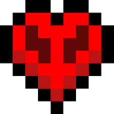
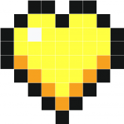

In survival mode, players have to gather natural resources such as wood and stone found in the environment in order to craft certain blocks and items. Depending on the difficulty, monsters spawn in darker areas outside a certain radius of the character, requiring players to build a shelter at night. The mode also has a health bar which is depleted by attacks from mobs, falls, drowning, falling into lava, suffocation, starvation, and other events. Players also have a hunger bar, which must be periodically refilled by eating food in-game, except in peaceful difficulty. If the hunger bar is depleted, automatic healing will stop and eventually health will deplete. Health replenishes when players have a nearly full hunger bar or continuously on peaceful difficulty.
Hardcore mode is a survival mode variant that is locked to the hardest setting and has permadeath. If a player dies in a hardcore world, they are no longer allowed to interact with it, so they can either be put into spectator mode and explore the world or delete it entirely. This game mode can only be accessed within the Java Edition.
In creative mode, players have access to all resources and items in the game through the inventory menu, and can place or remove them instantly. Players can toggle the ability to fly freely around the game world at will, and their characters do not take any damage and are not affected by hunger. The game mode helps players focus on building and creating projects of any size without disturbance.
